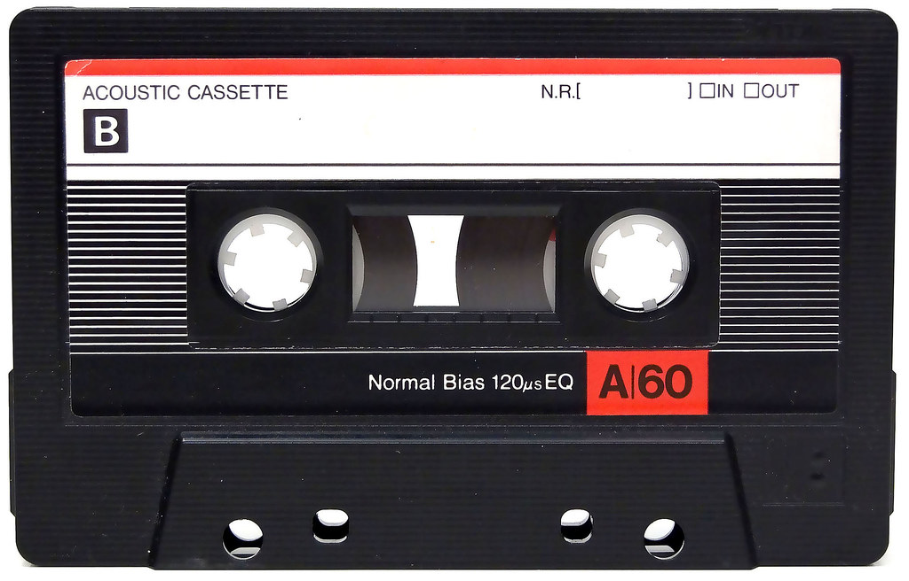

Conociendo: Fundamentos de HTML - Interacción humano ordenador
Inicio
Temas
Tema 1
Tema 2
Recursos digitales
Recurso 1
Recurso 2
Aprendizaje
Actividad 1
Actividad 2
Autor
Juan Camilo Rodriguez Preciado
Recursos Multimedios
Audio relacionado al tema: Fundamentos de HTML

Su navegador no soporta elementos de audio.